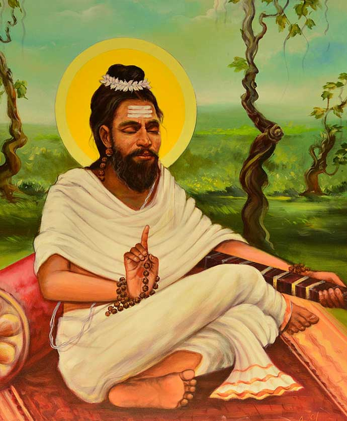
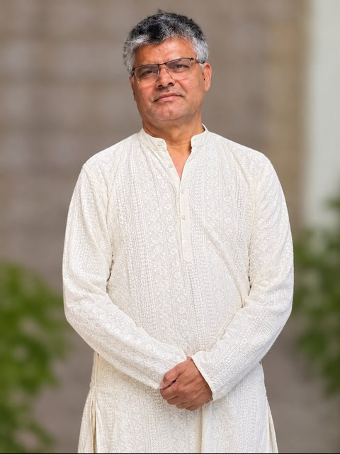
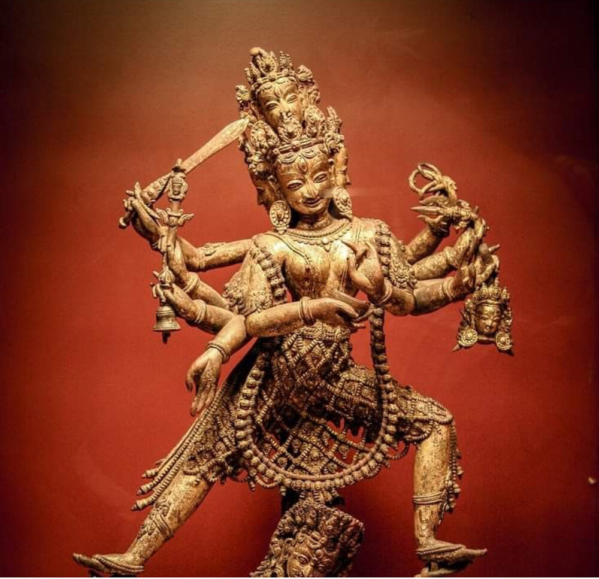

About
Vimarsha Foundation is a contemporary gurukula, a school devoted to transmitting the texts (śāstra) and practices (sādhana) of the Śaiva-Śākta tradition. In 2026 we decided to create a Spanish-language community to contribute to the foundation’s mission and support the study and practice in Spain of the teachings of Ācārya Sthaneshwar Timalsina, within the framework of the Sarvāmnāya tradition.
Vimarsha Madrid is our Spanish-speaking group, located in Madrid and also open online to those interested elsewhere.

Vimarsha Madrid
Vimarsha Madrid is devoted to supporting one another in practice (sādhana), studying classical texts (śāstra) and accompanying one another on the path.
We meet roughly every two weeks for an hour, in Madrid and online. Each session opens with a short recitation (pāṭha) and a few minutes of contemplation (dhyāna), then turns to a passage from a classical text (śāstra) or a dialogue (saṃvāda) of a topic announced in advance.
Each gathering is a time to cultivate together right reasoning (sattarka) and trust (śraddhā), nurturing a sense of community. Between sessions, study (svādhyāya) and practice (sādhana) continue on our own, and the conversation continues online.
If you would like to take part, join our WhatsApp group or email us at contacto@vimarsha.es.
Tradition

In the Śaiva-Śākta tradition, knowledge is passed down from teacher to disciple, within a lineage. Our tradition (sampradāya) is called Sarvāmnāya, and it integrates into a single system major currents such as Trika, Kālīkrama, Kubjikā and Śrīvidyā. This synthesis has been preserved in Nepal, especially in the Kathmandu Valley, since at least the twelfth century, and its teachings have been passed down unbroken to the present day.
Beyond Nepal, the principal custodian of the Sarvāmnāya lineage today is Ācārya Sthaneshwar Timalsina. Trained from childhood in his father’s Vedic gurukula and consecrated as ācārya in 1996, he combines traditional transmission with a distinguished university career, currently as holder of the chair in Classical Indic Humanities at Stony Brook University (New York).
In 2019 he founded Vimarsha Foundation, conceived as a global gurukula for the study of India’s classical philosophical systems. Vimarsha España was born within this gurukula to bring together in Spain people initiated into the sampradāya, as well as those not yet initiated who wish to approach the tradition. Our blog presents the complete genealogy of the lineage.
 Paṇḍita Tanka Prasad Timalsina
Paṇḍita Tanka Prasad Timalsina Svāmī Premchetan Brahmacārī
Svāmī Premchetan Brahmacārī Śaṅkara Caitanya Bhāratī
Śaṅkara Caitanya Bhāratī Khaptaḍa Bābā
Khaptaḍa Bābā Rāmānanda Giri
Rāmānanda Giri Yogī Kṣiprānāth
Yogī Kṣiprānāth
Vimarsha Kula
In the Śaiva-Śākta tradition, the term kula means the community of those who share a single lineage (paramparā). Vimarsha Kula brings together those who have received initiation (dīkṣā) in the Sarvāmnāya lineage.
In our tradition, the guru is a traditional teacher, a living channel through which one is joined to the lineage. That bond is established through initiation (dīkṣā), which opens the practice (sādhana) of the tradition to the disciple. Initiation is the culmination of a process of preparation, in which one gradually deepens, through study and practice, one’s relationship with the guru and the lineage.
If you are interested in receiving initiation, request more information on WhatsApp or email us at contacto@vimarsha.es.
Join
To take part, join our WhatsApp group and briefly introduce yourself, telling us what moves you to join. If you prefer, you can also email us at contacto@vimarsha.es.
Participation is free, and our community is open to anyone who feels called to this path.
Philosophy
One of the most profound teachings of our tradition is that fullness (pūrṇatā) is not something we lack, but something we have forgotten. Already present in the foundational texts (āgama) of various Śaiva-Śākta streams, this insight reached its most rigorous formulation with the Kashmiri philosopher Abhinavagupta (10th–11th centuries). His Trika system (loosely called “Kashmir Shaivism”) brought together streams such as Kaula and Krama with the philosophy of recognition (Pratyabhijñā), earlier systematized by Utpaladeva, his teacher’s teacher.
As its name indicates, the school of recognition invites us to recognize (pratyabhijñā) that the whole of reality, ourselves included, is consciousness (caitanya), the indissoluble unity of manifestation (prakāśa) and reflexivity (vimarśa). It is a monist ontology, inseparable from contemplative praxis. It thus shares with the Advaita Vedānta of Śaṅkarācārya the affirmation of a non-dual absolute, but does not deny its creative, dynamic and immanent dimension (śakti). This is why it describes itself as a supreme non-dualism (paramādvaita), one that does not exclude the diversity of the world but embraces it.
What limits us, then, is not the phenomenal world. It is universal consciousness (Paramaśiva) itself that, by virtue of its freedom (svātantrya), contracts (saṃkoca), veils its fullness and experiences itself as a plurality of finite subjects, whose field of experience is articulated into seemingly independent objects. Liberation (mokṣa) therefore consists in remembering our own nature (svarūpa) as that fullness, until subject and object are discovered to be poles of a single, undivided consciousness (saṃvit). We are speaking, then, of an awakening that does not wait for death (jīvanmukti), and in which even the motor, cognitive and phenomenal limitation of the psychophysical subject (jīva) is revealed as a particularized expression of consciousness. Hence the delighted wonder (camatkāra) with which consciousness revels in the diversity of states (bhāva) and flavors (rasa) that limitation and multiplicity make possible. This is not, therefore, a philosophy centered on mere intellectual speculation, but an experiential philosophy whose character is fundamentally soteriological. Study (svādhyāya) and practice (sādhana) are thus means directed toward the realization of the indissoluble unity (sāmarasya) of Śiva and Śakti, consciousness and its self-reflexive dynamism.

This unity does not abolish relationship. The tradition recognizes śakti as a living “you” who can be addressed, so that nonduality itself leaves room for encounter. Devotion (bhakti) is thus not a return to dualism, but the relational play of a consciousness that divides itself in order to love and recognize itself. Utpaladeva himself, who systematized the philosophy of recognition, expressed this in his hymns (Śivastotrāvalī), where nondual thought addresses the absolute as a “you.” For this reason, in our group, study is not an end in itself. Right reasoning (sattarka), trust (śraddhā) and devotion (bhakti) are understood as facets of a single realization.